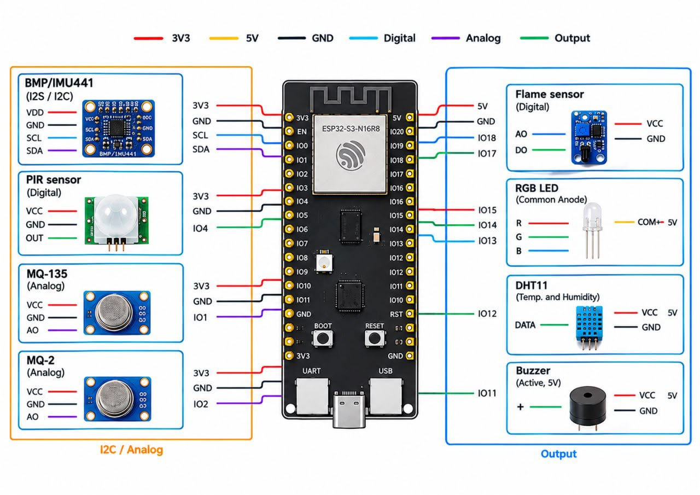
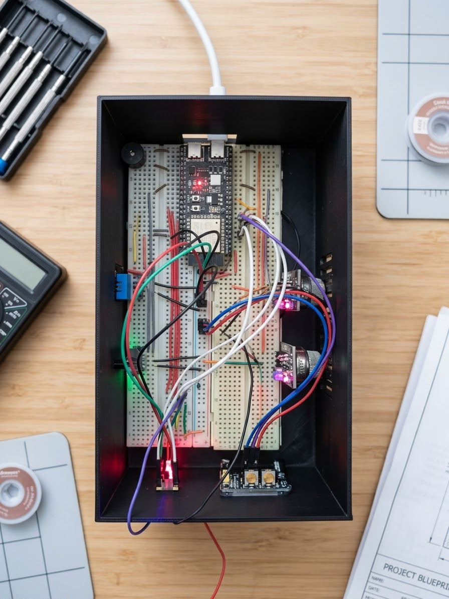
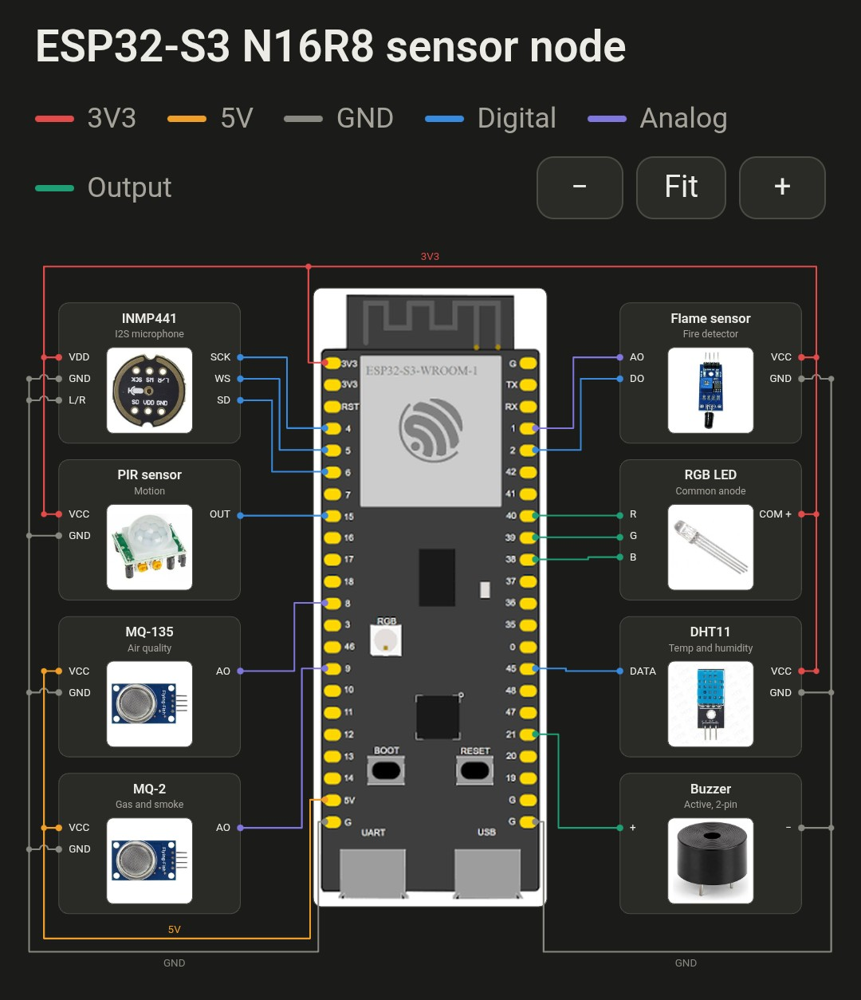

The Idea
Many home-monitoring setups address one condition at a time. I wanted to explore whether several household safety signals could be brought together in one affordable device: environmental sensor readings, flame indication, movement while security is armed, and unusual sounds recognized by a small machine-learning model.
HomeSafe combines conventional sensors with on-device audio classification and a companion Android application. The ESP32-S3 remains responsible for interpreting sensor data, making security decisions, and controlling the physical alarm. The phone acts as a monitoring and control interface rather than the safety controller.
The central engineering challenge was coordinating sensor sampling, continuous audio inference, alarm logic, Wi-Fi, and application communication on a resource-constrained microcontroller.
Design & Architecture
HomeSafe is organized into three functional layers. Sensor interpretation and safety decisions stay on the ESP32-S3; the Android application receives synchronized state and sends supported commands over a direct WebSocket connection.
- Sensing layer — DHT11, MQ-2, MQ-135, flame sensor, PIR motion sensor, and INMP441 I2S microphone.
- Embedded processing layer — ESP32-S3 firmware acquires readings, evaluates environmental conditions, runs TinyML audio inference, manages security schedules, and arbitrates the buzzer and RGB LED.
- Application layer — Android companion app displays device state, environment, security, and event history, and sends supported control commands.
Key Design Decisions
- Local-first processing: core detection and physical alarm behavior do not require a cloud service or phone connection.
- Edge audio inference: the INMP441 microphone supplies 16 kHz mono audio to an Edge Impulse inference library integrated into the firmware.
- Direct communication: the app connects to the ESP32 over Wi-Fi using a versioned WebSocket protocol.
- Separate repositories: firmware/hardware and the Android app are maintained independently.
- Custom enclosure: a case was designed in SolidWorks to organize and house the hardware.

Components & BOM
| Component | Qty | Purpose |
|---|---|---|
| ESP32-S3 DevKitC-1 | 1 | Main controller, Wi-Fi connectivity, ADC, I2S capture, and firmware runtime. |
| DHT11 | 1 | Ambient temperature and relative-humidity monitoring. |
| MQ-2 gas sensor module | 1 | Analog indication associated with smoke and combustible gases. |
| MQ-135 gas sensor module | 1 | Analog air-quality and gas-related indication. |
| Flame sensor module | 1 | Analog flame-level reading and digital detection input. |
| PIR motion sensor | 1 | Movement detection for armed-security monitoring. |
| INMP441 I2S microphone | 1 | 16 kHz mono audio capture for TinyML classification. |
| Common-anode RGB LED | 1 | Visual status and alarm indication. |
| Active buzzer | 1 | Audible physical alarm. |
| Power supply and supporting electronics | 1 set | Power distribution, resistors, breadboard, and wiring. |
| Custom SolidWorks enclosure design | 1 | Mechanical housing designed to organize the electronics. |
Build Photos


Code & Technical Details
Embedded firmware
The firmware is written in C++ using the Arduino framework and PlatformIO. It reads the DHT11, MQ-2, MQ-135, flame, and PIR sensors at their configured intervals. Environmental hazard conditions use a confirmation period and cooldown behavior to reduce reactions to brief fluctuations. Security mode supports armed/disarmed operation, sustained-motion confirmation, and a daily schedule evaluated using synchronized time. Security settings are persisted with ESP32 Preferences.
TinyML audio classification
The INMP441 microphone captures 16 kHz mono audio through I2S.
The trained Edge Impulse model and inference SDK are bundled in
the firmware as HomeSafe_v2_inferencing. The
firmware continuously processes audio windows and evaluates
class confidence. A non-normal class at or above 0.80 confidence
qualifies as an audio event, followed by an event cooldown.
MFCC, MFE, and spectrogram-based feature extraction were explored during model development. The feature-extraction pipeline converts raw audio into a representation that the classifier can use to distinguish sound classes.
Application communication
The Android app is built with React Native and TypeScript. It connects directly to the ESP32 over Wi-Fi using a versioned WebSocket protocol. State snapshots establish the device state, while incremental updates communicate subsequent changes. Supported commands include status requests, security-mode changes, schedule configuration, and security-alarm silencing.
Android application and event storage
The app has Home, Environment, Security, and History tabs, with connection settings accessible from Home. Events received while connected are de-duplicated and stored locally in SQLite, with a retention limit of 500 events. The app does not receive historical event replay from the device, so events can be missed while disconnected.
Measured Behavior & Data
The project report documents the tested decision rules and the embedded audio pipeline rather than presenting HomeSafe as a certified safety product. The examples below show how the prototype turns sensor readings into confirmed events.
| Input | Test condition | Confirmation |
|---|---|---|
| MQ-2 | ADC ≥ 900 | 1,000 ms sustained |
| MQ-135 | ADC ≥ 400 | 1,000 ms sustained |
| Flame sensor | Digital output LOW | 1,000 ms sustained |
| PIR motion | HIGH while armed | 1,000 ms sustained |
| DHT11 | Temperature and humidity readings | Informational; sampled every 2,000 ms |
TinyML model profile
- Classes: alarm, distress, glass_break, impact, and normal.
- Pipeline: 16 kHz audio, 2-second windows, 500 ms stride, MFCC features, and an INT8-quantized 1D CNN.
- Dataset: 813 training samples and 134 test samples documented in the model-development section of the report.
- Embedded timing: approximately 79 ms for DSP and 4 ms for classification in the supplied serial tests.
Representative device-state message
{
"temperature": 28.0,
"humidity": 65,
"mq2_raw": 450,
"mq135_raw": 180,
"flame_detected": false,
"motion_detected": false,
"armed": false,
"environmental_alarm_active": false,
"security_alarm_active": false
}The values above are illustrative. The report's supplied classifier results include a sample alarm score of 0.828, above the configured 0.80 event threshold. Reported evaluation results include 77.0% validation accuracy and a separate 57.54% quantized-model result; these results are not a claim of certified real-world detection accuracy.
Build Log
Failures & Fixes
lib directory.
Implemented Capabilities
- Controller: ESP32-S3 DevKitC-1.
- Environmental and security inputs: DHT11, MQ-2, MQ-135, flame sensor, and PIR sensor.
- Audio input: INMP441 I2S microphone, 16 kHz mono.
- Audio inference: Edge Impulse TinyML model integrated into the ESP32 firmware.
- Audio event threshold: non-normal class confidence of at least 0.80; 3-second audio event cooldown.
- Environmental logic: 1-second hazard confirmation and 5-second cooldown after hazards clear.
- Communication: direct Wi-Fi WebSocket connection using protocol v1.
- Android app: Home, Environment, Security, and History tabs.
- Local event storage: up to 500 received events in SQLite.
- Security scheduling: configurable daily schedule, including overnight schedules.
- Physical alerts: common-anode RGB LED and active buzzer controlled by the ESP32.
- Cloud requirement: no cloud account or cloud service required for the core local system.
What I Learned
HomeSafe brought together several areas of engineering that are often developed separately: analog and digital sensor interfacing, embedded firmware, real-time audio capture, TinyML inference, wireless protocols, Android development, and mechanical enclosure design. One of the biggest lessons was that integration is its own engineering challenge. A sensor or model working independently does not guarantee that the complete system will behave reliably when everything runs together.
What worked
- Keeping hazard evaluation and physical alarm behavior on the ESP32-S3.
- Separating firmware and Android app development into two repositories.
- Using a versioned WebSocket protocol to synchronize the app with the device.
- Integrating the Edge Impulse inference library into the embedded firmware.
What I would improve next
- Design a dedicated PCB and improve power distribution.
- Develop repeatable calibration and controlled test procedures for the gas and flame sensors.
- Evaluate the audio model with a larger, independent test set and document per-class performance.
- Improve communication security and add a robust authenticated connection model.
- Implement Android system notifications and a reliable strategy for events occurring while the app is disconnected.
- Complete longer-duration tests across different environmental and operating conditions.